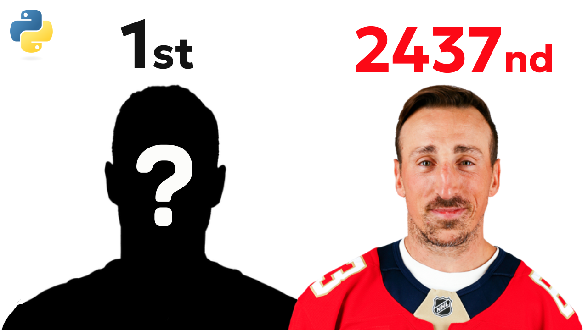

NHL Players Ranked By Attractiveness
Backstory
Last year I read an article stating:
Artificial intelligence has determined that the Canucks have the NHL's most attractive team, with an "average attractiveness score" of 7.841 out of 10.
The article, however, had several SIGNIFICANT flaws to it:
- The Vancouver Canucks have never come first in anything, so I immediately knew something was wrong
- The article points to Tonybet as the source, but the link goes only to a generic betting homepage, with no study details or scoring method. That lack of transparency really grinds my gears.
- The article claims it analyzed 1,079 NHL players, but that number doesn’t line up with a typical season snapshot (32 teams × 23 active roster spots ≈ 736). So who are these extra 343 ghosts that we analyzed... Sure I can understand a few called up from the minors, but THAT many??
So I did what any reasonable person would do:
I built my own study and documented the whole thing end-to-end.
These are the questions I set out to answer:
- Who are the most and least attractive players in the NHL?
- Which NHL team is the most attractive on average?
- Does attractiveness correlate with winning (or losing)?
- Are defensemen more attractive than forwards—and are goalies really the ugliest?
- Are Canadian NHL players more attractive than American NHL players & how do they compare to the rest of the world?
Bonus: How do the notorious Paul Bisonette and Ryan Whitney stack up in the rankings??
Building
Before we can rank NHL headshots, we need a model that can look at a face and spit out an “attractiveness score”. And before we can train a model… we need training data.
Get Data
So naturally I went hunting for a dataset where faces are already scored for attractiveness. Somehow, this exists?: SCUT-FBP5500.
SCUT-FBP5500 is a facial beauty dataset from South China University of Technology with 5,500 neutral, frontal face images.
The basic idea is simple: each face is rated by a group of human judges, and the average of those ratings becomes the image’s “beauty score”. (It’s basically a very organized, peer-reviewed version of “rate me 1–5”.)
Build ML Model
Now that we have a dataset with “beauty scores”, the goal is to train a model that can take a brand-new face (not in the dataset) and predict an attractiveness score on the same 1–5 scale.
Way back in university I built a baby CNN that could guess what number was written in a little pixel grid. I figured this was the same problem, but on steroids...
So I optimistically dusted off my old assignment and applied it to facial analysis, boy was I wrong. The initial MSE (Mean Square Error) was around 2 (keep in mind the scale is from 1-5). So it was great at randomly guessing attractiveness.
At that point I had two options:
- Keep brute-forcing a CNN from scratch and pretend I had infinite data and infinite patience
- Do what modern computer vision actually does: reuse a model that already understands faces, then train a much smaller model on top
So that’s what I did.
I switched to a transfer-learning style approach and leaned on pre-trained face models to do the heavy lifting. Instead of asking a CNN to learn “what a face is” from only a few thousand images, I first convert each face into a compact numerical representation (an embedding) using ArcFace.
Think of it like this:
- A raw image is a giant mess of pixels
- An embedding is a clean 512-number “summary” of the important facial features
Once I had those embeddings, predicting attractiveness became a standard regression problem and this is where things actually started working.
Then I tested three different models:
- A Neural Network (4 dense layers + dropout)
- Ridge Regression (linear, L2 regularization)
- SVR (RBF kernel) with GridSearchCV tuning
Here’s what I found on the held-out test set:
- Neural Network: Test MSE 0.1895, Test MAE 0.3322, typical error ±0.435 (ouch)
- Ridge Regression: Test MSE 0.1080, Test MAE 0.2534, typical error ±0.329
- SVR (best): Test MSE 0.0958, Test MAE 0.2392, typical error ±0.309
So the winner is SVR. It’s non-linear (unlike Ridge), it plays nicely with the weird geometry of embedding space, and it was the only model that consistently got me below my “please be under 0.1 MSE” goal.
Now that we have a working model, we can run it on NHL player headshots and get our beauty scores
Geting Data
Getting NHL headshots took me a long time to navigate the murky waters of the internet. Out of a miracle I found https://github.com/Zmalski/NHL-API-Reference which has a beautiful API for NHL data, including player headshots and stats for active players. Thank you Zmalski, you’re my hero.
Results & Analysis
Now that we have our model and our data, we can run the predictions and analyze the results.
Goalies vs Defensemen v Forwards
First question: are goalies actually the ugliest, or is that just something we tell ourselves because they’re weird?
Turns out… goalies win. By average attractiveness score:
- Goalies — 3.1272 (72 players)
- Defense — 3.1135 (243 players)
- Forwards — 3.1091 (457 players)
So yes, I’m officially reporting that goalies are the most attractive position group. I don’t make the rules, I just run the model.
Most Attractive Countries
Now for the passport check. Here are the top countries by average attractiveness (minimums are just "who exists in the NHL", so don't bully the small sample sizes):
- Slovakia (SVK) — 3.2267 (8 players)
- Denmark (DNK) — 3.2197 (4 players)
- Czechia (CZE) — 3.2102 (19 players)
- Norway (NOR) — 3.1434 (2 players)
- Canada (CAN) — 3.1331 (314 players)
- Switzerland (CHE) — 3.1327 (12 players)
- Sweden (SWE) — 3.0990 (76 players)
- USA (USA) — 3.0985 (222 players)
- Slovenia (SVN) — 3.0985 (1 player)
- Russia (RUS) — 3.0806 (53 players)
- Finland (FIN) — 3.0805 (36 players)
- Australia (AUS) — 3.0669 (1 player)
- Germany (DEU) — 3.0137 (6 players)
- Austria (AUT) — 2.9915 (3 players)
- Belarus (BLR) — 2.9630 (6 players)
- Latvia (LVA) — 2.9625 (7 players)
- Great Britain (GBR) — 2.9452 (1 player)
- France (FRA) — 2.9450 (1 player)
Canada is right near the top and has the biggest sample size by far, which is basically the statistical version of "yeah ok that checks out".
Most Attractive Teams (Unweighted)
If you simply average every player on each roster equally, here are all 32 teams ranked:
- COL — 3.2262 (Points %: 80.9%)
- LAK — 3.2244 (53.1%)
- NSH — 3.2105 (52.1%)
- WPG — 3.2036 (45.8%)
- NYI — 3.1978 (60.2%)
- DAL — 3.1798 (64.3%)
- SJS — 3.1778 (55.2%)
- FLA — 3.1650 (55.2%)
- SEA — 3.1575 (53.1%)
- PIT — 3.1529 (59.4%)
- DET — 3.1518 (64.0%)
- OTT — 3.1467 (53.1%)
- MTL — 3.1443 (62.2%)
- BUF — 3.1339 (59.4%)
- ANA — 3.1326 (54.1%)
- VGK — 3.1318 (62.5%)
- CHI — 3.1256 (48.0%)
- TOR — 3.1196 (57.1%)
- WSH — 3.1152 (54.0%)
- UTA — 3.1136 (55.1%)
- BOS — 3.1100 (59.2%)
- CGY — 3.1086 (48.0%)
- PHI — 3.1042 (56.2%)
- CBJ — 3.0990 (53.1%)
- NJD — 3.0905 (53.1%)
- VAN — 3.0898 (37.8%) — yikes
- STL — 3.0888 (46.9%)
- NYR — 3.0832 (48.0%)
- MIN — 3.0475 (65.0%)
- EDM — 3.0297 (58.0%)
- CAR — 3.0266 (66.0%)
- TBL — 3.0208 (68.1%)
So if the internet told you Vancouver was #1… I have some bad news.
Most Attractive Teams (Weighted by Ice Time)
One fair criticism of the "simple average" is that the 13th forward who plays 6 minutes a night counts the same as a top-pair defenseman playing 25.
So I also calculated a weighted average where players who are putting in the most minutes on the ice, count more (weighted by ice time). Here are all 32 teams ranked by weighted score:
- NSH — 3.2585 (Points %: 52.1%)
- SEA — 3.2176 (53.1%)
- COL — 3.1944 (80.9%)
- LAK — 3.1880 (53.1%)
- PIT — 3.1727 (59.4%)
- WPG — 3.1721 (45.8%)
- DAL — 3.1552 (64.3%)
- BUF — 3.1484 (59.4%)
- OTT — 3.1467 (53.1%)
- SJS — 3.1454 (55.2%)
- NYI — 3.1406 (60.2%)
- CHI — 3.1366 (48.0%)
- MTL — 3.1349 (62.2%)
- FLA — 3.1343 (55.2%)
- TOR — 3.1296 (57.1%)
- WSH — 3.1187 (54.0%)
- CBJ — 3.1123 (53.1%)
- BOS — 3.1075 (59.2%)
- ANA — 3.1046 (54.1%)
- DET — 3.1011 (64.0%)
- VGK — 3.0938 (62.5%)
- PHI — 3.0930 (56.2%)
- CGY — 3.0897 (48.0%)
- NYR — 3.0849 (48.0%)
- VAN — 3.0827 (37.8%) — ranked 25th
- UTA — 3.0719 (55.1%)
- CAR — 3.0478 (66.0%)
- NJD — 3.0468 (53.1%)
- STL — 3.0437 (46.9%)
- EDM — 3.0423 (58.0%)
- MIN — 3.0348 (65.0%)
- TBL — 3.0211 (68.1%)
Does Attractiveness Correlate With Performance?
This is where I expected at least some funny trend (like “handsome guys take fewer penalties” or “ugly guys score more out of spite”).
Nope.
With 769 players who had stats available, I ran both Pearson (linear) and Spearman (rank) correlations between attractiveness and common performance metrics:
- Goals: Pearson -0.0663 (p=0.066), Spearman -0.0419 (p=0.246)
- Assists: Pearson -0.0497 (p=0.169), Spearman -0.0495 (p=0.170)
- Points: Pearson -0.0599 (p=0.097), Spearman -0.0495 (p=0.170)
- Penalty minutes: Pearson -0.0247 (p=0.495), Spearman -0.0370 (p=0.306)
Translation: there’s no meaningful relationship. Being attractive doesn’t make you score more, win more, or take fewer trips to the penalty box.
Biz & Whit: The Important Scientific Questions
And finally, the real reason we're all here.
Biz

- Score: 3.59 / 5.0
- Rank: #45 / 807 (Top 5.6%)
Whit

- Score: 3.37 / 5.0
- Rank: #156 / 807 (Top 19.3%)
For comparison, some of the top of the leaderboard:
- Vince Dunn — 4.05
- Jason Dickinson — 3.91
- Kris Letang — 3.88
- Marc Gatcomb — 3.86
- Scott Wedgewood — 3.85
- Anthony Duclair — 3.80
- Seth Jones — 3.78
- Eetu Luostarinen — 3.77
- Ross Colton — 3.77
- Jeremy Swayman — 3.76
- Mackie Samoskevich — 3.73
- Brady Skjei — 3.73
- Dmitry Kulikov — 3.73
- Vitek Vanecek — 3.73
- Luke Evangelista — 3.72
- William Karlsson — 3.71
- Denver Barkey — 3.71
- Spencer Stastney — 3.70
- Tyler Seguin — 3.70
- John Gibson — 3.68
Biz is in elite company. Whit is still comfortably above average. The model has spoken.
For the FULL rankings of every player on every team, visit the complete player rankings.